![[DBPP]](pictures//asm_color_tiny.gif)


![[Search]](pictures//search_motif.gif)
In our third case study,
we use the example of matrix-matrix
multiplication to illustrate issues that arise when developing data
distribution neutral libraries. In particular, we consider the
problem of developing a library to compute C = A.B
, where
A
, B
, and C
are dense matrices of size
N
N
. (A dense matrix is a matrix in which most of the
entries are nonzero.) This matrix-matrix multiplication involves  operations, since for each element
operations, since for each element  of C
, we must
compute
of C
, we must
compute
We wish a library that will allow each of the arrays A , B , and C to be distributed over P tasks in one of three ways: blocked by row, blocked by column, or blocked by row and column. This library may be defined with a subroutine interface suitable for sequential composition in an SPMD program or with a channel interface suitable for parallel or concurrent composition. The basic algorithmic issue remains the same: Does the library need to incorporate different algorithms for different distributions of A , B , and C , or should incoming data structures be converted to a standard distribution before calling a single algorithm?
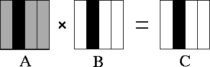
Figure 4.10: Matrix-matrix multiplication A.B=C
with matrices A
,
B
, and C
decomposed in one dimension. The components of
A
, B
, and C
allocated to a single task are shaded
black. During execution, this task requires all of matrix
A
(shown stippled).
We start by examining algorithms for various distributions of A
,
B
, and C
. We first consider a one-dimensional, columnwise
decomposition in which each task encapsulates corresponding columns
from A
, B
, and C
. One parallel algorithm makes each
task responsible for all computation associated with its  . As
shown in Figure 4.10, each task requires all of matrix
A
in order to compute its
. As
shown in Figure 4.10, each task requires all of matrix
A
in order to compute its  . 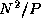 data are required
from each of P-1
other tasks, giving the following per-processor
communication cost:
. 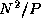 data are required
from each of P-1
other tasks, giving the following per-processor
communication cost:
Note that as each task performs 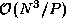 computation, if
N
P
, then the algorithm will have to transfer roughly
one word of data for each multiplication and addition performed.
Hence, the algorithm can be expected to be efficient only when
N
is much larger than P
or the cost of computation is much larger
than  .
.
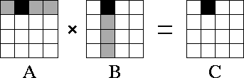
Figure 4.11: Matrix-matrix multiplication A.B=C
with matrices A
,
B
, and C
decomposed in two dimensions. The components of
A
, B
, and C
allocated to a single task are shaded
black. During execution, this task requires corresponding rows and
columns of matrix A
and B
, respectively
(shown stippled).
Next, we consider a two-dimensional decomposition of A
, B
,
and C
. As in the one-dimensional algorithm, we assume that a task
encapsulates corresponding elements of A
, B
, and
C
and that each task is responsible for all computation associated with
its . The computation of a single element requires
an entire row  and column 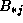 of A
and B
,
respectively. Hence, as shown in Figure 4.11, the
computation performed within a single task requires the A
and
B
submatrices allocated to tasks in the same row and column,
respectively. This is a total of 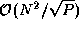 data,
considerably less than in the one-dimensional algorithm.
and column 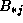 of A
and B
,
respectively. Hence, as shown in Figure 4.11, the
computation performed within a single task requires the A
and
B
submatrices allocated to tasks in the same row and column,
respectively. This is a total of 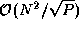 data,
considerably less than in the one-dimensional algorithm.
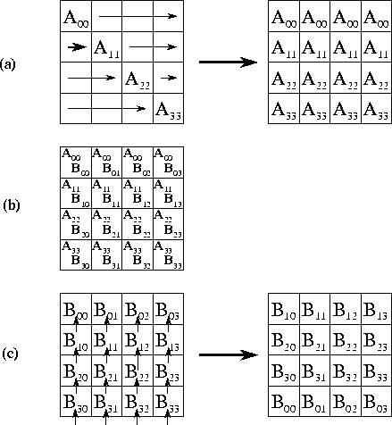
Figure 4.12: Matrix-matrix multiplication algorithm based on two-dimensional
decompositions. Each step involves three stages: (a) an
A
submatrix is broadcast to other tasks in the same row; (b) local
computation is performed; and (c) the B
submatrix is rotated
upwards within each column.
To complete the second parallel algorithm, we need to design a strategy for communicating the submatrices between tasks. One approach is for each task to execute the following logic (Figure 4.12):
for j
=0 to 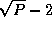
in each row i
, the
to the other tasks in the row
accumulate .
send to upward neighbor
endfor
set 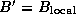
 th task broadcasts
th task broadcasts
Each of the 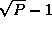 steps in this algorithm involves a broadcast
to tasks (for A'
) and a nearest-neighbor
communication (for B'
). Both communications involve  data. Because the broadcast can be accomplished in steps
using a tree structure, the per-processor communication cost is
data. Because the broadcast can be accomplished in steps
using a tree structure, the per-processor communication cost is
Notice that because every task in each row must serve as the root of a broadcast tree, the total communication structure required for this algorithm combines a hypercube (butterfly) structure within each row of the two-dimensional task mesh and a ring within each column.
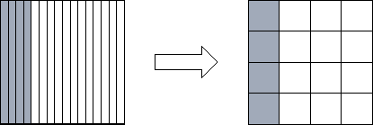
Figure 4.13: Reorganizing from a one-dimensional to a one-dimensional
decomposition of a square matrix when P=16. Shading indicates one
set of four tasks that must exchange data during the
reorganization.
Comparing Equations 4.3 with 4.4,
we see that the two-dimensional decomposition yields the more efficient
parallel algorithm. Does this mean that our parallel library should
convert input arrays decomposed in one dimension to a two-dimensional
decomposition before performing the matrix multiplication? To answer
this question, we need to know the cost of the reorganization. The
communication costs associated with the reorganization of a single
array are as follows; each task exchanges data with  other
tasks, with each message having size 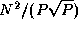
(Figure 4.13):
other
tasks, with each message having size 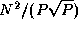
(Figure 4.13):
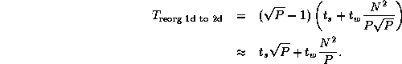
If A , B , and C are all decomposed in one dimension, we must perform three such conversions. This gives a worst-case total communication cost for reorganization and multiplication using the two-dimensional algorithm of
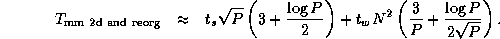
Comparing this expression with Equation 4.3, we see that the algorithm that reorganizes data structures to a 2-D decomposition before performing the multiplication will be more efficient than an algorithm that does not, when
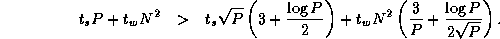
This condition holds for all except small P . Hence, we conclude that our parallel matrix multiply library should convert to a two-dimensional decomposition before performing computation, as follows.
procedure matrix_multiply(A, B, C)begin
if 1d_distributed(A) then reorg_to_2d(A)
if 1d_distributed(B) then reorg_to_2d(B)
2d_matrix_multiply(A, B, C)
if 1d_distributed(C) then reorg_to_1d(C)
end
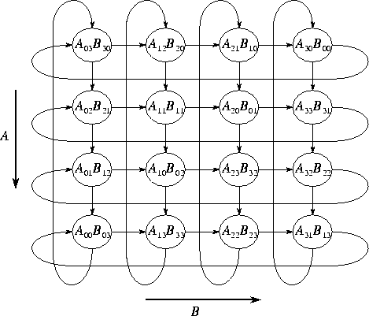
Figure 4.14: Layout of the A
and B
matrices in the systolic
matrix-matrix multiplication algorithm for a 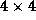 task mesh.
The arrows show the direction of data movement during execution of the
systolic algorithm.
We still have not said the last word about the ideal data distribution for matrix-matrix multiplication! An alternative algorithm allows the broadcast operations used in the preceding algorithm to be replaced with regular, nearest-neighbor (``systolic'') communications. However, data must be distributed among tasks in a different fashion. As before, we assume that A , B , and C are decomposed into 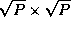 submatrices. Each task (i,j) contains submatrices 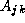, , and , where 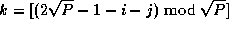. This data layout is illustrated in Figure 4.14.
Computation proceeds in steps. In each step, contributions to C are accumulated in each task, after which values of A move down and values of B move right. The entire computation requires a total of 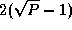 messages per task, each of size , for a cost of
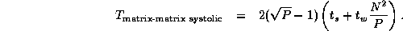
Communication costs are less by a factor of about than in Equation 4.4. Again, this benefit must be weighed against the cost of converting matrices A , B , and C into the layout required by this algorithm. This analysis is left as an exercise.
© Copyright 1995 by Ian Foster